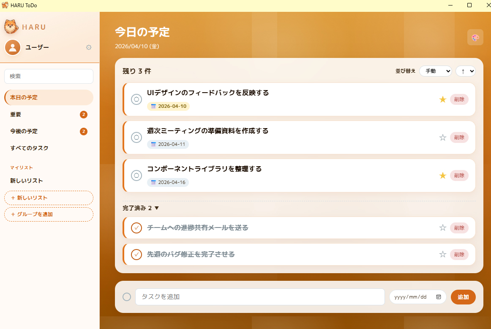

WEB APPLICATION
WEB APPLICATION / TASK MANAGER

Flask + SQLiteで構築した、デスクトップ・Web両対応のタスク管理アプリです。ポメラニアンをマスコットキャラクターに据えたポップでかわいいデザインが特徴で、シンプルなToDoアプリにとどまらず、カスタムリストやテーマ変更など多彩な機能を実装しました。Web版はRender.comで公開しており、Windows向けのexeファイルも配布しています。
タスクの追加・完了・重要フラグ・期日設定・並び替えといった基本的なタスク管理機能に加え、カスタムリストとグループによる整理機能を実装しています。デザイン面では16テーマ × 12アクセントカラーの組み合わせによる高いカスタマイズ性を持ち、自分好みの見た目に変更できます。
PythonとFlaskをベースにしながら、PyInstallerとpywebviewを組み合わせることでWindowsのexe版も配布できる構成にしました。Web版・デスクトップ版で同一のコードベースを共有しており、メンテナンス性を高めています。CSSを活用したテーマ切り替えは、クラスの付け替えだけで全体の配色が即座に変わる軽量な実装です。
Web版はRender.comの無料プランで運用しているため、しばらくアクセスがない状態だとサーバーがスリープします。初回アクセス時に30〜60秒ほど待ち時間が発生する場合があります。exe版はコード署名未対応のため、起動時にWindowsのSmartScreen警告が表示されますが、「詳細情報」→「実行」で起動できます。